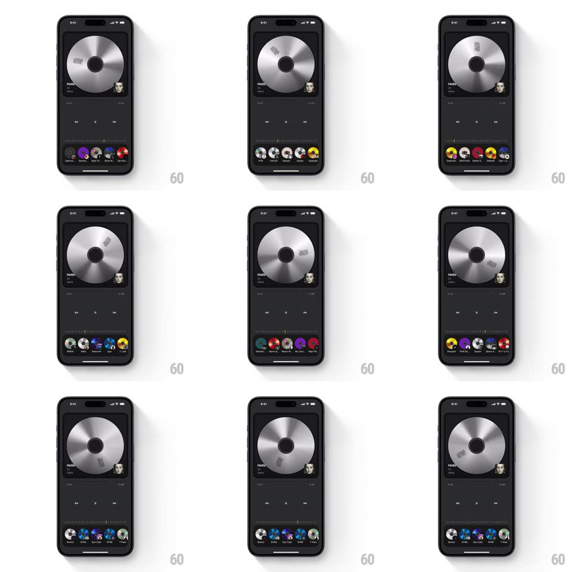

Media
Frame-by-frame

Rebuild this interaction 1:1: Droplay's alphabetical seek - dragging along a vertical letter index beside the CD carousel scrubs the carousel at speed while the large CD in the player spins and the carousel snaps to the album whose title matches the landed letter.

Rebuild this interaction 1:1: Droplay's alphabetical seek - dragging along a vertical letter index beside the CD carousel scrubs the carousel at speed while the large CD in the player spins and the carousel snaps to the album whose title matches the landed letter. ## Integration Integration: stack-agnostic spec - springs given as stiffness/damping, timed motions as duration + curve; map every value to your framework and animation library of choice. ## Scene Dark music player: a large metallic CD on top (track title "Hello", artist, transport controls), and a bottom carousel of small CD thumbnails on a curved rail. A slim A-Z index rail sits along the carousel's edge. ## Motion spec Pattern: index-scrub coupled carousel + platter spin. - Drag on the letter rail: the carousel scrolls horizontally at a rate mapped to the rail position (nonlinear - letters near the drag point dominate), tracking the finger with ~80ms lag for weight. - The big CD platter spins proportionally to carousel velocity (visual spin rate = scroll speed x k), decelerating with friction when scrolling stops. - On release: the carousel decelerates and snaps the nearest album to center (spring ~380/24, ~400ms); the centered CD enlarges slightly and its title label brightens. - The active letter highlights on the rail and ticks as letters pass (haptic-timed pops, 60ms). ## Calibration - Spin direction follows scroll direction; reversing scroll reverses spin. - Carousel items tilt on the curve - edge CDs angle away from the viewer. ## Reduced motion Carousel scrolls without spin; snap without spring overshoot. ## Don't miss - The rail is alphabetical, not positional - jumping from A to M skips proportionally many albums. - The platter never stops dead: it eases to rest after the snap.